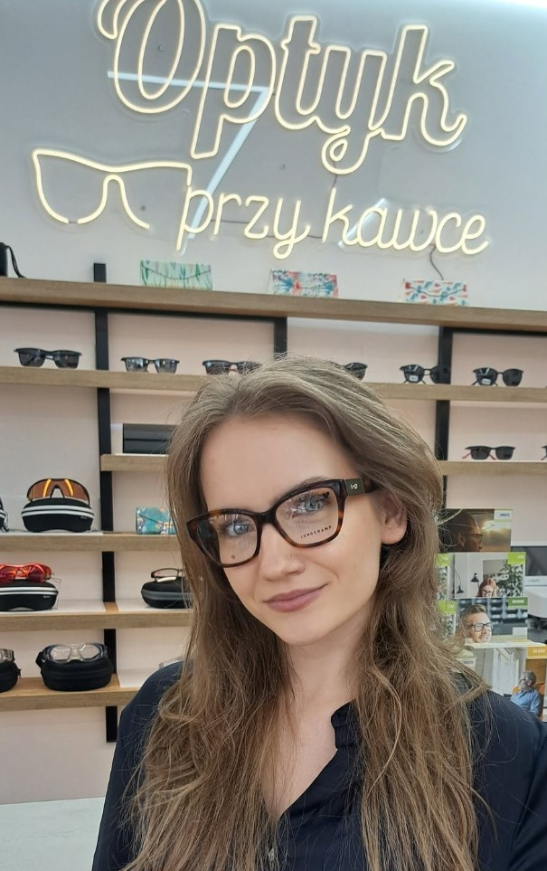
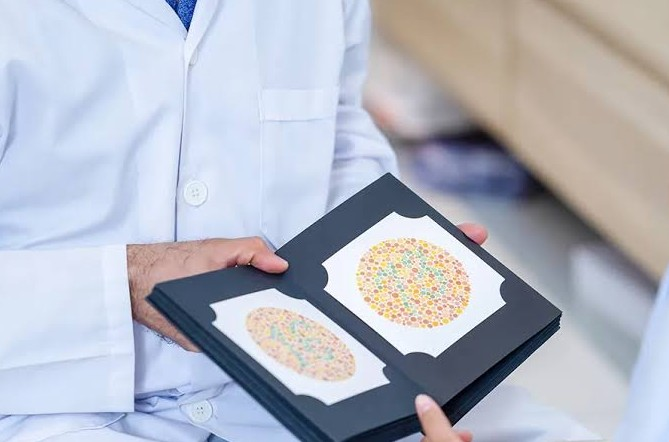
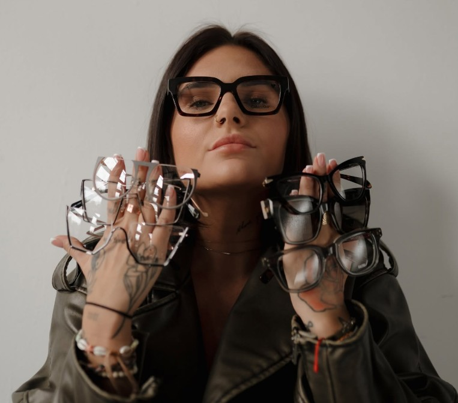

Optyk w Lublinie · ul. Obywatelska 11
Zobacz wyraźnie. Przy kawie.
Badanie wzroku, okulary i soczewki w Lublinie. Bez pośpiechu, z kimś, kto naprawdę pomoże wybrać.

Nasza oferta
Zacznij od badania
Badanie wzroku
Dokładne badanie i spokojna rozmowa.
Dowiedz się więcej
Dopasowane do Ciebie
Okulary korekcyjne
Oprawki, w których jesteś sobą. Soczewki dopasowane do Twojego dnia.
Dowiedz się więcej
Okulary progresywne
Do czytania, pracy i patrzenia w dal. Poznaj możliwości jednej pary.
Okulary przeciwsłoneczne
Na słoneczne dni i codzienne wyjścia. Porozmawiajmy o doborze okularów.
Soczewki kontaktowe
Swoboda na co dzień. Zapytaj o dobór soczewek i sposób ich używania.
Refundacja recept NFZ
Masz receptę? Zapytaj o możliwość refundacji i potrzebne dokumenty.

Nasz salon
Okulary wybiera się dłużej niż minutę
Dlatego w naszym salonie w Lublinie dajemy Ci czas na spokojne przymierzanie, porównanie i rozmowę. Zależy nam, abyś czuł się dobrze i widział jeszcze lepiej.
Poznaj nas →Jak ostro widzisz tę tablicę?
Przesuń suwak i zobacz, jak zmienia się ostrość. To tylko ilustracja, a nie badanie wzroku. To prawdziwe wykonamy w salonie.
Dowiedz się o badaniu wzrokuOpinie z Google
Co mówią o nas klienci
Jeśli mam być szczery, to czasami rodzina nie przyjmie tak ciepło, jak zostałem przyjęty w salonie. Nawet nie mówię o dobraniu oprawek do twarzy, bo to po prostu mistrzostwo. Po 5 minutach spędzonych w salonie wiesz już, że masz do czynienia z ludźmi z doświadczeniem i pasją do tej pracy. Oprawki zostały dopasowane świetnie i zadziwiająco szybko, a nakładki dopasowane do moich potrzeb zawodowych. Wszystko wytłumaczone i po wizycie nie było żadnych pytań, na które nie otrzymałem odpowiedzi. Szczerze polecam.
Polecam z całego serca. Miejsce znalezione samodzielnie, pierwsze spotkanie oczywiście przy kawce. Przymierzania nie było końca, ale udało się wybrać te jedne najlepsze oprawki, zaangażowanie naprawdę niesamowite. Okulary zrobione szybko, odebranie miłe i profesjonalne. […] Na pewno wrócę i będę polecał.
Polecam z całego serca! Profesjonalna, przesympatyczna obsługa. Olbrzymi wybór oprawek i szkieł. Bardzo indywidualne podejście do klienta. Badanie wzroku niesamowicie dokładne i precyzyjne. Okulary noszę od wielu lat, byłam u różnych okulistów, ale nigdzie nie spotkałam się z takim rzetelnym badaniem i w tak miłej atmosferze. Olbrzymi plus za parking pod samym salonem.
Jestem bardzo zadowolony z usług tego salonu optycznego. Wykonywałem tutaj dwie pary okularów i w obu przypadkach obsługa była bardzo profesjonalna. Duży wybór oprawek, fachowe doradztwo oraz szybka realizacja zamówienia. Zdecydowanie polecam ten salon.
Gorąco polecam usługi salonu. Korzystam od lat dla całej rodziny. Szeroki wybór oprawek oraz soczewek. Podejście do klienta oraz do tematu okularów bardzo profesjonalne i rzetelne. […] Pyszna kawka. Dla klientów zmotoryzowanych zapewnione miejsce do parkowania.
Najczęściej zadawane pytania
Czy trzeba się umawiać?
Najlepiej zadzwonić i umówić termin. Wtedy mamy dla Ciebie czas.
Ile kosztuje badanie wzroku?
Cenę podamy telefonicznie lub w salonie.
Co zabrać na wizytę?
Dotychczasowe okulary i jeśli masz, aktualną receptę.
Czy mogę przymierzyć wiele oprawek?
Tak. Wybór oprawek to najprzyjemniejsza część wizyty, a kawa czeka.
Czy realizujecie recepty refundowane?
Zadzwoń i zapytaj, powiemy, co zabrać i jak to wygląda.
Gdzie jesteście?
Przy ul. Obywatelskiej 11 w Lublinie. Mapa jest poniżej.
Do zobaczenia przy kawie.
Odwiedź nasz salon w Lublinie.
- Adres salonuul. Obywatelska 11, 20-092 Lublin
- Zadzwoń do nas723 980 100optykprzykawce@gmail.com
- Godziny otwarciaPon.–pt.: 9:00–18:00Weekend: zamknięte
- Znajdź nas w sieci